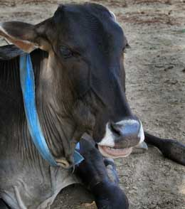

Tamal
Is a Bull, born on 2007-09-17, who joined us on 2007-09-13.
When Sudevi brought Nakula and Sushila to Care for Cows for special medical treatment, I tagged along. I'm healthy and have no complaints. well, I may have one small one. and that is that I lost the tuft of my tail and now the thing doesn't even hang down to my knees. In Vraja Mandala it is commonly accepted that when the tail of a cow of bull touches the ground they are taken to be most auspicious. Sura dasi, the blind cow, is the best example we have here of a cow with such a tail. I tell you it is sight to see her walking in circles in her pen holding her head high and swishing her tail as if she has not a care in the world! When her tail touches the earth, it so gracefully wafts up small delicate clouds of precious Vrindavana dust so that anyone who is fortunate enough to come in her vicinity, invariably gets some of it on their head. After watching her for some time, I begin to fanaticize that I also have a long glossy black tail with a silver switch and begin to prance around like her. But invariably one of the older bulls detects my musing and butts me in the side to shake me from my dream and then I fall back into the real world where my tail is at least two feet from the ground. If any of you come across an ointment or elixir that is know to increase the length of bull tails, please inform me at once.